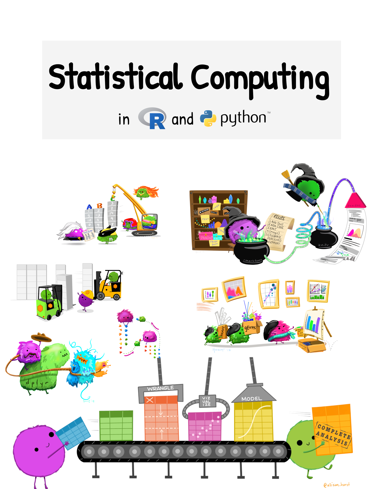

Statistical Computing using R and Python
Preface

Content Overload!
This book is designed to demonstrate introductory statistical programming concepts and techniques. It is intended as a substitute for hours and hours of video lectures - watching someone code and talk about code is not usually the best way to learn how to code. It’s far better to learn how to code by … coding.
I hope that you will work through this book week by week over the semester. I have included comics, snark, gifs, YouTube videos, extra resources, and more: my goal is to make this a collection of the best information I can find on statistical programming.
In most cases, this book includes way more information than you need. Everyone comes into this class with a different level of computing experience, so I’ve attempted to make this book comprehensive. Unfortunately, that means some people will be bored and some will be overwhelmed. Use this book in the way that works best for you - skip over the stuff you know already, ignore the stuff that seems too complex until you understand the basics. Come back to the scary stuff later and see if it makes more sense to you.
Book Format Guide
I’ve made an effort to use some specific formatting and enable certain features that make this book a useful tool for this class.
Buttons/Links
The book contains a number of features which should help you navigate, use, improve, and respond to the textbook.
![There are a number of interactive features available in this textbook. There is a search bar on the left sidebar, along with links to each chapter. On the right, there is a menu specific to the sections in each chapter - this helps you navigate within the chapter. There is also a link to "Edit this page" that allows you to submit a correction to the textbook via Github. At the bottom, there is a link to the next chapter, but there are also reaction emoji that allow you to express yourself after you read the chapter. If you log in via GitHub, you can also leave comments, start discussions, or ask questions using the github discussion integration at the bottom of the page.](images/how-to-use/Textbook-features.png)
Special Sections
Some instructions depend on your operating system. Where it’s shorter, I will use tabs to provide you with OS specific instructions. Here are the icons I will use:
Windows-specific instructions
Mac specific instructions
Linux specific instructions. I will usually try to make this generic, but if it’s gui based, my instructions will usually be for KDE.
These sections contain things you may want to look out for: common errors, mistakes, and unfortunate situations that may arise when programming.
Demonstrations
These sections demonstrate how the code being discussed is used (in a simple way).
These sections contain illustrations of the concepts discussed in the chapter. Don’t skip them, even though they may be long!
These sections contain activities you should do to reinforce the things you’ve just read. You will be much more successful if you read the material, review the example, and then try to write your own code. Most of the time, these sections will have a specific format:
The problem will be in the first tab for you to start with
A solution will be provided in R, potentially with an explanation.
A solution will be provided in Python as well.
In some cases, the problem will be more open-ended and may not adhere to this format, but most try it out sections in this book will have solutions provided. I highly recommend that you attempt to solve the problem yourself before you look at the solutions - this is the best way to learn. Passively reading code does not result in information retention.
These sections may direct you to additional reading material that is essential for understanding the topic. For instance, I will sometimes link to other online textbooks rather than try to rehash the content myself when someone else has done it better.
Learn More
These sections will direct you to additional resources that may be helpful to consult as you learn about a topic. You do not have to use these sections unless you are 1) bored, or 2) hopelessly lost. They’re provided to help but are not expected reading (Unlike the essential reading sections in red).
These generic sections contain information I may want to call attention to, but that isn’t necessarily urgent or a common error trap.
Advanced
These sections are intended to apply to more advanced courses. If you are taking an introductory course, feel free to skip that content for now.
Expandable Sections
These are expandable sections, with additional information when you click on the line
This additional information may be information that is helpful but not essential, or it may be that an example just takes a LOT of space and I want to make sure you can skim the book without having to scroll through a ton of output.
Answers or punchlines may be hidden in this type of expandable section as well.
Analytics
I have enabled Google Analytics on this site for the purposes of measuring this work’s impact and use both in my own classes and elsewhere. I’m not using the individual tracking/ad-targeting settings (to the best of my knowledge) - my only purpose in using Google Analytics is to assess how often this site is used, and where its’ users are located at a rough (state/regional) level.
If you are using this site and aren’t affiliated with the University of Nebraska Lincoln, or have found it useful, please let me know by making a comment in Giscus (below) or sending me an email! These affirmations help me make a case that spending time on this resource is actually a good investment.
Acknowledgements
The cover of this book is an amalgam of different images by the lovely @allison_horst, which are released under the cc-by 4.0 license. I have modified them to remove most of the R package references and arrange them to represent the topics covered in this book.
Laptop icon used in the tab/logo created by Good Ware - Flaticon
Throughout this book, I have borrowed liberally from other online tutorials, published books, and blog posts. I have tried to ensure that I link to the source material throughout the book and provide appropriate credit to anyone whose examples I have used, modified, or repurposed. Special thanks to the tutorials provided by Posit/RStudio and the tidyverse project.